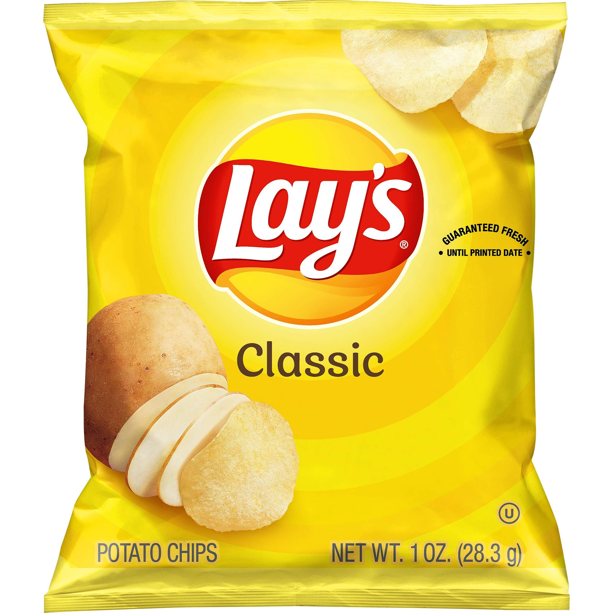

Original Lays
Original flavor Lays potato chips, often referred to simply as "Lays," are a beloved classic in the world of snacks. These thin, crispy potato chips have been satisfying snack cravings for generations. What sets Original Lays apart is their simplicity and the pure, unadulterated potato taste that comes through with every bite. Lorem The secret to the irresistible appeal of Original Lays lies in their minimalistic ingredient list. Made from just three ingredients – potatoes, vegetable oil, and salt – these chips showcase the natural flavor of the humble potato. The potatoes are thinly sliced and fried to perfection, resulting in a satisfying crunch that is hard to replicate. The hint of salt enhances the potato's innate taste without overwhelming it, making them an ideal snack for those who appreciate the subtle beauty of simplicity.
One of the standout features of Original Lays potato chips is their versatility. Whether enjoyed on their own during a movie night, paired with a sandwich for a satisfying crunch, or used as a base for creative culinary experiments, these chips can adapt to various occasions. They are a staple at picnics, parties, and gatherings, providing a familiar and comforting snack option that appeals to people of all ages.
Pringles
Original Pringles are an iconic snack renowned for their distinctive curved shape and impeccable crunch. These potato-based crisps have earned a special place in the hearts of snack enthusiasts worldwide. What sets Original Pringles apart is their unique, hyperbolic shape, which allows for a consistent, uniform texture and flavor in every chip. The classic taste is a harmonious blend of potato goodness, with just the right touch of salt to enhance the overall experience. Each Pringle is a testament to precision and quality, ensuring that snack lovers can savor the same delectable taste and satisfying crunch with every stackable chip. Whether enjoyed on their own or dipped into your favorite condiments, Original Pringles are a beloved snack that never goes out of style, making them an irresistible choice for snacking anytime, anywhere.
Ruffles
Original Ruffles potato chips are a classic favorite that boasts a unique and hearty crunch. These ridged chips are known for their unmistakable texture, a result of their signature wavy cut, which provides a satisfying thickness and sturdiness that's perfect for dipping into your favorite sauces and dips. The original flavor delivers a simple yet delightful combination of sliced potatoes, high-quality cooking oil, and a pinch of salt, resulting in a robust, savory taste that appeals to chip enthusiasts of all ages. Whether you're enjoying them as a standalone snack or using them as a vehicle for your preferred dips, Original Ruffles offer a timeless and satisfying potato chip experience that has stood the test of time.